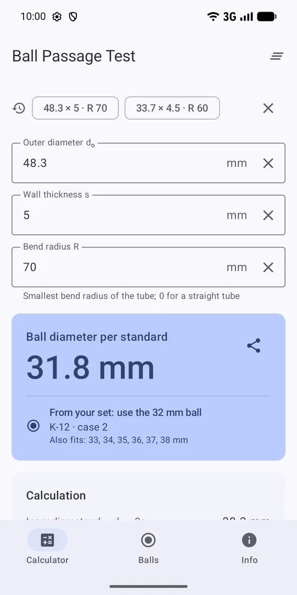
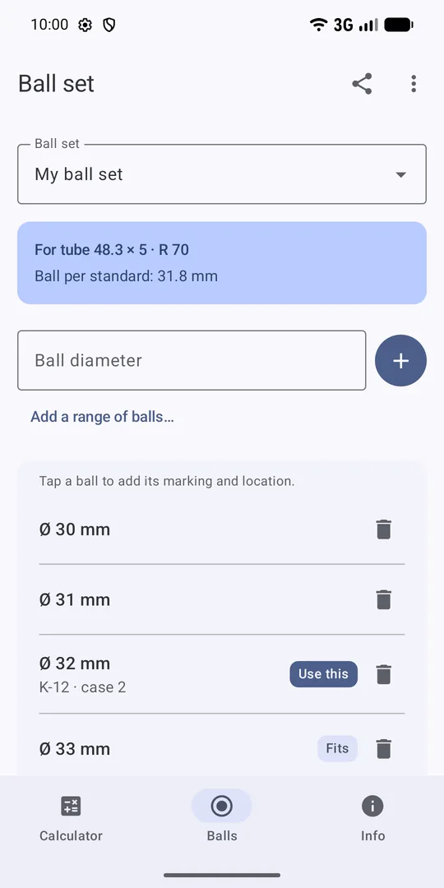

Ball passage test – the ball diameter in seconds
Enter the outer diameter, wall thickness and bend radius, and the app gives the steel ball diameter for the ball passage test per VGB-S-013 – and tells you which ball from your case to use.
Get it on Google Play Free, no ads, works offline. Android 8.0 or newer.

What is the ball passage test?
The ball passage test (Kugeldurchlaufversuch) checks that bent tubes and tube coils are not flattened too much in their bends. A steel ball of a specified diameter is driven through the tube; if it passes freely, the cross-section is acceptable. The test is part of manufacturing boilers, superheaters, economisers and other pressure parts.
Choosing the ball diameter
VGB-S-013 (section 7.2.5, Table 3)
The ball diameter is the inner diameter minus the value from Table 3, which depends on the inner diameter (rows 20–29, 30–39 and 40–49 mm) and on the bend ratio R/dₒ.
Example: tube 48.3 × 5 mm, bend radius 70 mm
- Inner diameter: dᵢ = 48.3 − 2 · 5 = 38.3 mm (row 30–39 mm)
- Bend ratio: R/dₒ = 70 / 48.3 = 1.44 (column 1.0–1.5)
- Deduction from Table 3: 6.5 mm
- Ball diameter: 38.3 − 6.5 = 31.8 mm
Features
- Instant resultThe ball diameter appears as you type, even above the keyboard on small phones.
- Step by stepInner diameter, bend ratio and deduction – easy to check and copy into a test report.
- Your ball setsThe balls of each case or workshop, with marking and location. The app suggests which one to use.
- Share setsSend a ball set to colleagues as a QR code or text.
- Result to shareSend the tube, the calculation and the ball as text for a test report or a message.
- No ads, offlineNo data collection. English, Polish and German.